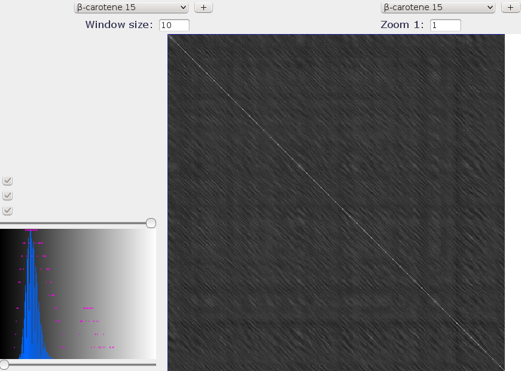

Repeated domains
The result below corresponds to a plot of β-carotene 15,15'-monooxygenase protein compared with itself. The matrix comparison chosen is blosum 45 and the window size is 10. The main diagonal is observed in the dotplot window. We can also see that deduce the presence of repetitions by observing the little diagonals.
